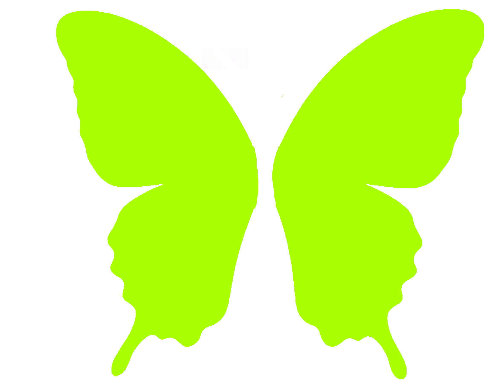

IDENTIFLY
Instala la app en tu móvil
Android
iPhone / iPad
Instalar IDENTIFLY
1
Abre Chrome
Accede a
identifly.app
desde el navegador Chrome en tu Android.
2
Toca el menú
Pulsa los
3 puntos
en la esquina superior derecha del navegador.
3
Añadir a pantalla de inicio
Selecciona
"Añadir a pantalla de inicio"
y confirma.
4
Listo
El icono de IDENTIFLY aparecerá en tu pantalla de inicio como cualquier otra app.
1
Abre Safari
Accede a
identifly.app
desde Safari.
2
Toca Compartir
Toca el botón Compartir. Si no lo ves, toca ••• y después Compartir.
3
Añadir a inicio
Desplázate y selecciona
"Añadir a pantalla de inicio"
.
4
Confirma
Toca
"Añadir"
en la esquina superior derecha. El icono aparecerá en tu inicio.
Ir a IDENTIFLY
IDENTIFLY es una PWA — Progressive Web App.
No requiere descarga desde ninguna tienda de apps.